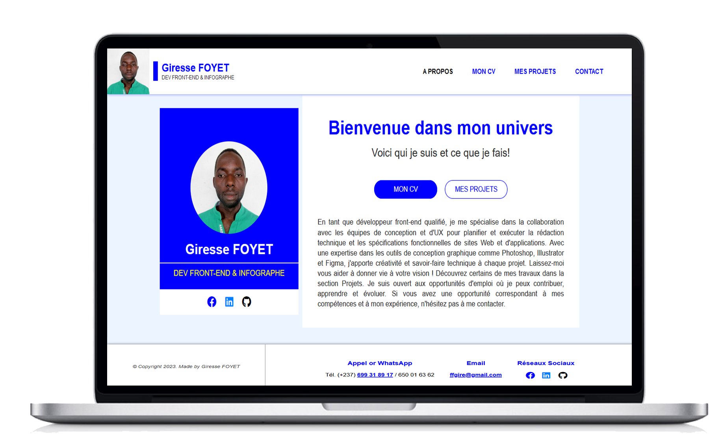

Vous trouverez ici quelques-uns des projets personnels et clients que j'ai créés, chaque projet contenant sa propre étude de cas.
Portfolio est un projet que j'ai créé pour présenté mon profil et certains de mes projets. J'ai réalisé le design graphique, le codage et la mise en forme.

J'ai eu a réaliser plusieurs logo et charte graphique de divers clients à l'aide de l'outil Adobe Illustrator.
J'ai réalisée plus de :
Logiciels utilisées : Photoshop, Illustrator, Figma, Indesign.
J'ai participer à la réalisation de plusieurs site web parmi lesquels
Mon rôle principal était l'insertion du contenu, la modification de l'apparence du site, l'amélioration de l'animation du contenu...